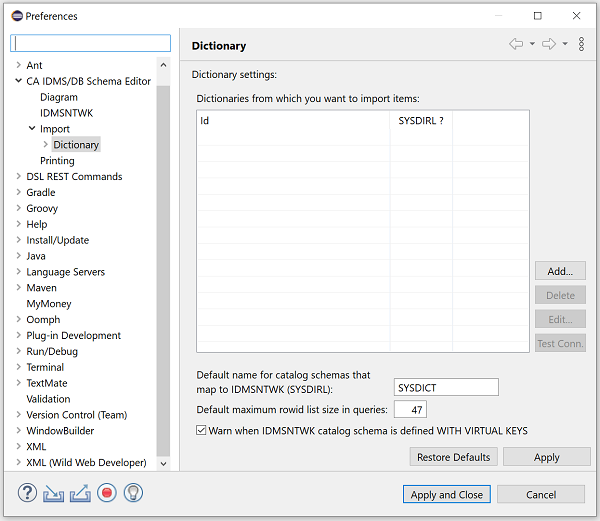
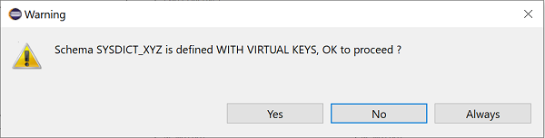
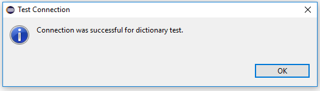

Dictionaries
Introduction
In the Eclipse preferences dialog you can define 1 or more dictionaries that are
used to import schema diagrams directly from IDMS application dictionaries on your mainframe(s) using SQL Web Connect
(or the SQL Option) and IDMS Server. Make sure you have installed the IDMS JDBC driver and set up the mainframe part
(i.e. an application dictionary with a catalog component and IDMS Server exposing this outside of your mainframe) before
defining dictionaries in Eclipse. If you see the following message, first go ahead with the
installation of the JDBC driver into your Eclipse workbench:
Without a backing application dictionary (with a catalog component) on a mainframe, the definition of a
dictionary for the diagram editor in the preferences dialog is useless.
In your mainframe application dictionary/catalog, you need a relational schema for IDMSNTWK; the diagram editor
will execute queries referring to this schema to retrieve the data it needs to generate diagrams. Note that you can
define several such (relational) schemas in the same catalog, each targeting a different dictionary (different
dictionaries share the same structure, which is described in the IDMSNTWK schema). In a freshly defined application
catalog there is a schema called SYSDICT; you can use this schema if the non-relational schemas for which you
want to generate diagrams are in the same dictionary. If this is not the case, create (an)other relational
schema(s) pointing to the dictionar(y)(ies) containing your non-relational schemas (via the DBNAME keyword):
CREATE SCHEMA SYSDICT_APPLDICT
FOR NONSQL SCHEMA SYSDIRL.IDMSNTWK VERSION 1
DBNAME APPLDICT
;
Notes:
- The reference to the IDMSNTWK schema is prefixed by the
SYSDIRL dictionary name (which might be different for you).
- You are free to specify either
WITH VIRTUAL KEYS or WITHOUT VIRTUAL KEYS or neither but because of
performance reasons it is advised to NOT work with virtual keys; all dictionary queries use set names and no virtual foreign keys
and for some reason, schemas without virtual keys seem to work (much) better. The performance loss (and resources consumed
on the mainframe) becomes bigger with the complexity of your schema and the size of your DDLDML area.
Defining a Dictionary
Open the Import/Dictionary section in the preferences dialog; there you have
an overview of the dictionaries you have defined:

Note the SYSDIRL ? column; you can mark dictionaries containing the IDMSNTWK schema so that you can generate a
diagram for this schema should want to do this.
The buttons on the right of the table allow you to add, remove or edit dictionary definitions as well as test
whether the connection (to the dictionary/catalog on your mainframe) works correctly.
You can also set the default name (SYSDICT) for the relational version of the IDMSNTWK schema in this section.
You shouldn't normally touch the magic number 47 unless you experience performance issues when importing diagrams directly
from a dictionary: it turns out that, in the schema editor's queries, the maximum number of rowids that can be specified in a
list, before the query does no longer perform and consumes excessive I/Os and CPU on the mainframe, is 47 (at least for the
dictionary I'm working against). It's up to you to play around with this figure, but you're on your own... Rowid lists are a
substitute for subqueries, which I've found to not always perform as they should.
The option to issue a warning message, when the relational version of the IDMSNTWK schema is defined WITH VIRTUAL KEYS, is
enabled by default. I have noticed a serious loss in performance when using a schema that is defined WITH VIRTUAL KEYS, though
the result of the diagram editor queries is the same as for schemas defined WITHOUT VIRTUAL KEYS.
Note: the schema editor queries ALWAYS navigate via set names and thus NEVER with rowids pointing to the owners of those sets
(the virtual foreign keys), yet this does not seem to be the cause for these performance issues: the same issues would arise when
the queries would be modified to effectively use virtual keys for schemas definied WITH VIRTUAL KEYS. Hence the warning when
importing from a dictionary:

Pressing the Always button will uncheck the option to issue a warning message in the above preference page.
Back to the defined dictionaries preference page: press the Add... button to create your first dictionary:
Most of the fields should be self-explaining by now. Each dictionary needs an identifier (id), so give your
dictionary a meaningful name. The dictname field maps to the DBNAME in your DBTABLE that includes the
dictionary and catalog segments making up your dictionary/catalog (where the schema you specify in the Schema
section is defined).
You are not obliged to enter your password but beware that if you don't, the diagram editor will ask you for it
whenever needed:
If you do store your password, don't forget to change it in Eclipse when you have changed your
mainframe password (you'll need to do this in every dictionary). There is something to say for both approaches.
The password is stored in an encrypted format that can only be decrypted by the diagram editor on your machine.
If you ever get tired of entering your password, either modify the dictionary definition or check the option to store
your password in the 'Password required' dialog above.
Press the Test Connection button to check whether the connection to your mainframe dictionary/catalog works. You
will get an error message dialog if the connection failed:
In the case the connection was successful you will be informed as well:

Press the OK button to save the dictionary definition in your workspace.